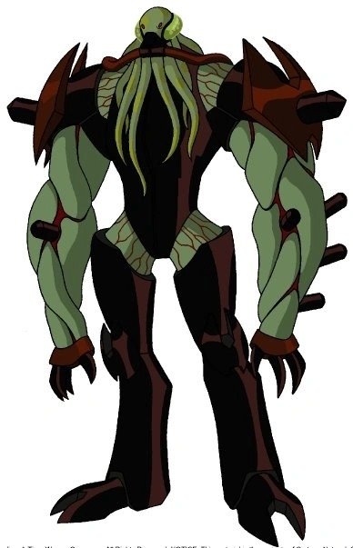

es un niño de 10 años el cual termian encontrando el omnitrix en un viaje atraves del pais con su abuelo y su prima gwen, ahora debe aprender a ser un heroe mientras descubre nuevas maneras de usar el reloj durante estas vacaciones

Es el abuelo de ben y gwen el cual los lleva en un viaje a lo largo del pais, aparentando ser un hombre mayor con una buena condicion fisica para su edad, pero posteriormente este revela ser un plomero, los plomeros eran organizacion gubernamental la cual se encargaba de manejar los problemas relacionados on alienigenas(como los hombres de negro pero a nivel intergalactico)

esnla prima de ben siendo una niña bastante aplicada e inteligente la cual suele fungir como la vos de la razon y un apoyo para ben a pesar de no tener una buena relacion con el, posteriormente obtendria el libro de hechizos de charmcaster aprendiendo progresivamente a usar magia y apoyando a ben tambien en las peleas

es un conquistador planetario el cual busca el conseguir el omnitrix para obtener un ejercito practicamente inevencible,teniendo un gran concimiento sobre este siendo capaz de destransformar al usuario. teniendo un fuerza bruta descomunal siendo capaz de abatir a casi cuealquier alinigena
kevin es un niño de 11 años que se encontraria con ben en un arcade, se harian amigos , kevin mostraria su hablidad de absorber energia,despues de insitar a ben a cometer crimenes, este se pelearia con kevin, en mdeio del forsejeo ben se convertiria en un alien kevin usaria sus hablidades absorbiendo la energia del reloj mutando, en siguientes capitulos kevin mutaria a tal punto de volverse una amalgama de alienigenas del omnitrix estando, completamente loco y solo queriendo matar a ben